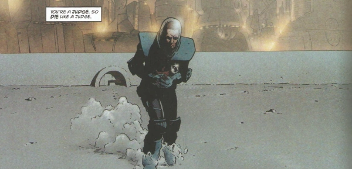

The new Luna-1 Judge-Marshal is haunted by a case from Mega-City One, as he tries to stamp out corruption in the colony.
Art by Peter Doherty
| Story Title | Parts | Pages | w indicates a wraparound coverCovers | Year(s) | Issues | Writer | Artist | Colourist | Letterer |
|---|---|---|---|---|---|---|---|---|---|
| Breathing Space | 9 | 47 | 1451: Simon Parr 1457: Karl Richardson 2 | 2005 | Reprints: M294 (supplement)1451-1459 | Rob Williams | Peter Doherty: 1‑2 Laurence Campbell, Lee Townsend: 3‑9 various | Peter Doherty | Ellie de Ville |
| year | episodes | pages |
| 1995 | 0 | 0 |
| 1996 | 0 | 0 |
| 1997 | 0 | 0 |
| 1998 | 0 | 0 |
| 1999 | 0 | 0 |
| 2000 | 0 | 0 |
| 2001 | 0 | 0 |
| 2002 | 0 | 0 |
| 2003 | 0 | 0 |
| 2004 | 0 | 0 |
| 2005 | 9 | 47 |
| 2006 | 0 | 0 |
| 2007 | 0 | 0 |
| 2008 | 0 | 0 |
| 2009 | 0 | 0 |
| 2010 | 0 | 0 |
| 2011 | 0 | 0 |
| 2012 | 0 | 0 |
| 2013 | 0 | 0 |
| 2014 | 0 | 0 |
| 2015 | 0 | 0 |